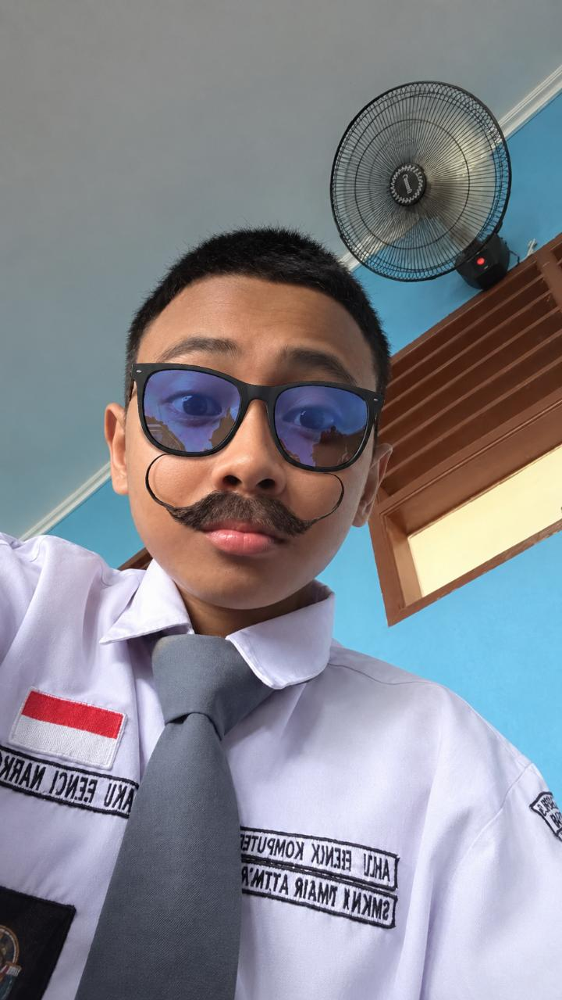

KENALI RONG PEMBUATNYA
PROGRAMMER PEMULA TO PRO PROGRAMMER

RHAYAN ZHAFIR ATTHAYA
Kelas : XI.7
Sekolah : SMAN 9 MAKASSAR
Hobi : Adalah pokoknya
Saya adalah pembuat website ini yang ingin belajar lebih jauh mengenai pembuatan website dan teknologi.
Contact Saya
Hubungi atau kunjungi akun saya melalui link berikut.
Mengapa Saya Membuat Website Ini?
Saya membuat website ini karena saya ingin memperkenalkan PSM Makassar sebagai salah satu klub sepak bola kebanggaan Sulawesi Selatan. Selain itu, website ini saya buat sebagai bentuk tugas sekaligus untuk mengembangkan kemampuan saya dalam membuat website menggunakan HTML dan CSS.
Komentar ta' mengenai website ini
waktu dan tempat dipersilahkan.